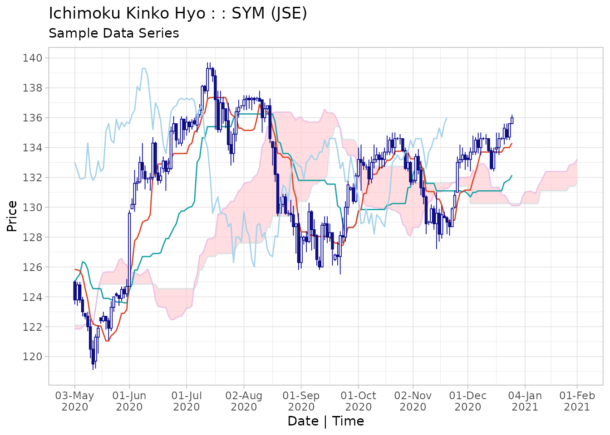
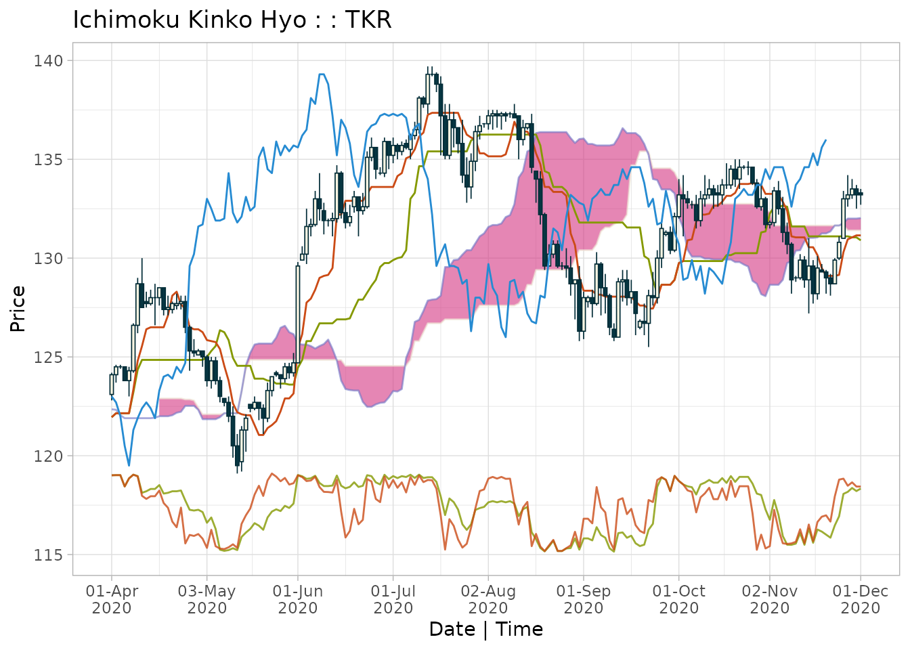

Ichimoku Kinko Hyo
Definition
The 一目均衡表 Ichimoku Kinko Hyo [cloud chart] consists of the following lines added to a candlestick chart:
転換線 Tenkan-sen [conversion line]: the mid-point of the highest high and lowest low for the past 9 periods (including the current period)
基準線 Kijun-sen [base line]: the mid-point of the highest high and lowest low for the past 26 periods (including the current period)
先行スパン 1 Senkou span A [leading span A]: the mid-point of Tenkan-sen and Kijun-sen plotted ahead 26 periods (including the current period)
先行スパン 2 Senkou span B [leading span B]: the mid-point of the highest high and lowest low for the past 52 periods (including the current period), plotted ahead 26 periods (including the current period)
遅行スパン Chikou span [lagging span]: the current period closing price plotted behind 26 periods (including the current period)
The 雲 kumo [cloud] is the area bounded by Senkou span A and Senkou span B (usually shaded on a chart).
Interpretation
Ichimoku Kinko Hyo can be translated as ‘one-glance equilibrium chart’. It is designed to allow the price action and market structure of financial securities to be determined visually ‘at-a-glance’.
For example in a strongly upwards-trending market, the current candlesticks would be above the Tenkan-sen, which would be above the Kijun-sen, which in turn would be above the cloud, and the Chikou span may not have anything above it.
The lines and the cloud represent dynamic support and resistance zones relative to the price candles. Generally, the thicker the cloud, the tougher the support/resistance. In our previous example, if the price now reverts downwards, it can expect support first at the Tenkan-sen, then the Kijun-sen and finally the cloud itself.
When the price enters the cloud, i.e. it is between the cloud base and cloud top, it is an important area to gauge whether there is sufficient momentum for the price to break through the cloud or whether the cloud eventually provokes a reversal.
More subtle interpretations involve the Chikou span in particular and its action in relation to the cloud lines as well as the candles.
It is outside the scope of this vignette to provide a full tutorial on the use of Ichimoku Kinko Hyo.
Context
Ichimoku analysis is the latest refinement in candlestick charting techniques, which also originated from Japan. Developed by 一目山人 Ichimoku, Sanjin, the alias of 細田吾一 Hosoda, Goichi, the work was published in 1969 as the seminal 「一目均衡表」 [ichimoku kinkou hyou]. It gained popularity in Japan especially after the publication of Sasaki’s 「一目均衡表の研究」 [ichimoku kinkouhyou no kenkyuu] in 1996, and is now widely-used in technical analysis worldwide.
The ichimoku time periods have traditionally been calculated as 9, 26 and 52 based on manual data analysis performed in Japan in a pre-computer age where there was a 6-day working week resulting in 26 average trading days in a month. Although this bears little resemblance to the current day, the use of these time periods has persisted as an ‘accepted practice’. To use other periods would be meaningless in a sense as ‘market psychology’ can and often does create its own realities, independent of any fundamentals.
However, there is no reason for the technique not to evolve, and to reflect changing trading realities perhaps other parameters will become more relevant in the collective psychology. For this reason, the length of these periods can be set as parameters in the ‘ichimoku’ package. However please do so only with caution and note that using other periods invalidates the traditional interpretations of Ichimoku Kinko Hyo.
Finally, the use originated with daily candlesticks, and the most valid interpretation remains for daily data. However, it is equally used today for both shorter, e.g. 4-hour or hourly, and longer, e.g. weekly or monthly, charts.
A Typical Workflow
Data
ichimoku works with data frames and tabular data. The
ichimoku() function handles as input xts, data.frame,
data.table, tibble, matrix, and other data.frame compatible objects.
ichimoku incorporates an interface with the OANDA fxTrade API to return data for major currencies, metals, commodities, government bonds and stock indices. Please refer to the OANDA vignette.
# ichimoku can create clouds directly from OANDA data, for example:
cloud <- ichimoku(oanda("USD_JPY"))ichimoku has been designed to be fully pipeable and interfaces well with other R packages that return financial data, or indeed the OANDA functions from the package itself:
# Using R 4.1's new pipe operator:
oanda("USD_JPY") |> ichimoku() |> plot()
# Or equally using the 'magrittr' pipe:
oanda("USD_JPY") %>% ichimoku() %>% plot()Input data requirements
The requirement on the input data is minimal: a series of prices indexed by valid timestamps.
# Sample OHLC price data is assigned to data frame 'TKR':
TKR <- sample_ohlc_data
head(TKR)
#> time open high low close volume
#> 1 2020-01-02 123.0 123.1 122.5 122.7 1875
#> 2 2020-01-03 122.7 122.8 122.6 122.8 1479
#> 3 2020-01-06 122.8 123.4 122.4 123.3 1792
#> 4 2020-01-07 123.3 124.3 123.3 124.1 1977
#> 5 2020-01-08 124.1 124.8 124.0 124.8 2239
#> 6 2020-01-09 124.8 125.4 124.5 125.3 1842Date-time index
Should be POSIXct or in a format convertible to POSIXct
In a column with name containing ‘date’, ‘time’ or ‘index’, or else the row names of the dataset
Open/High/Low/Close (OHLC) data should always be used where available.
In columns with names containing ‘open’, ‘high’, ‘low’ and ‘close’. These are searched as regular expression patterns in the column names. For further details see the section data validation
If only HLC price data is available, the opening price will be taken to be the closing price of the previous period. This means that the candlesticks will not be accurate, but calculation of the cloud lines is not affected
Single series price data can also be used for producing an pseudo cloud chart if, for example, OHLC data is not available or because the price is a calculated price such as VWAP.
If HLC data is not found in the dataset, the search will then proceed for single series price data in columns with names containing ‘price’, ‘value’, or ‘close’
A pseudo-OHLC series will then be constructed from the single price. This is done by assigning the opening price to be the closing price of the previous period, and the high and low to be the max and min respectively of the opening and closing prices
As the constructed OHLC series does not contain real high/low values, the ichimoku cloud chart calculated in this way is not accurate and serves as an approximation only
Note on data retrieval: it is optimal to retrieve
data starting from further back than the period being analysed. This is
as certain cloud lines are calculated using up to 52 values and then
plotted ahead up to 26 periods, and hence there will be only be a full
chart with all of the ichimoku cloud values from the 78th observation
onwards (using default cloud periods). Call ichimoku() on
the full dataset and then subset the data window when plotting to ensure
that there is a full cloud for the entire chart.
ichimoku()
ichimoku() is the main function of the ichimoku package.
It takes the input data object and returns an ichimoku object, which
inherits the classes ‘ichimoku’, ‘xts’ and ‘zoo’. For further details,
please refer to the ichimoku
object specification.
Optional arguments:
-
tickera ticker to identify the instrument, otherwise this is set to the name of the input object -
periods[default c(9, 26, 52)] a vector defining the length of periods used for the cloud. This parameter should not normally be modified as using other values would be invalid in the context of traditional Ichimoku analysis -
...additional arguments, for instance ‘holidays’, passed along totradingDays()for calculating the future cloud on daily data -
keep.dataset to TRUE to retain additional data present in the input object as additional columns and/or attributes. Note: only columns of numeric type or type coercible to numeric are preserved, otherwise NAs are introduced.
cloud <- ichimoku(TKR)
print(cloud, plot = FALSE, width = 180)
#> ichimoku [ more() to display more rows | look() to inspect attributes ]
#> object
#> open high low close cd tenkan kijun senkouA senkouB chikou cloudT cloudB
#> 2020-01-02 123.0 123.1 122.5 122.7 -1 NA NA NA NA 122.8 NA NA
#> 2020-01-03 122.7 122.8 122.6 122.8 1 NA NA NA NA 122.9 NA NA
#> 2020-01-06 122.8 123.4 122.4 123.3 1 NA NA NA NA 123.0 NA NA
#> 2020-01-07 123.3 124.3 123.3 124.1 1 NA NA NA NA 123.9 NA NA
#> 2020-01-08 124.1 124.8 124.0 124.8 1 NA NA NA NA 123.6 NA NA
#> 2020-01-09 124.8 125.4 124.5 125.3 1 NA NA NA NA 122.5 NA NA
#> 2020-01-10 125.3 125.3 124.8 125.2 -1 NA NA NA NA 122.6 NA NA
#> 2020-01-13 125.2 125.3 125.1 125.2 0 NA NA NA NA 123.0 NA NA
#> 2020-01-14 125.2 125.2 124.3 124.4 -1 123.90 NA NA NA 123.1 NA NA
#> 2020-01-15 124.4 124.5 123.7 123.9 -1 123.90 NA NA NA 122.1 NA NA
#> 2020-01-16 123.9 124.4 123.8 124.2 1 123.90 NA NA NA 121.9 NA NA
#> 2020-01-17 124.2 124.3 123.0 123.5 -1 124.20 NA NA NA 121.1 NA NA
#> 2020-01-20 123.5 123.8 123.1 123.2 -1 124.20 NA NA NA 121.4 NA NA
#> 2020-01-21 123.6 123.6 123.4 123.6 0 124.20 NA NA NA 121.5 NA NA
#> 2020-01-22 123.5 124.0 123.3 123.5 0 124.15 NA NA NA 121.9 NA NA
#> 2020-01-23 123.5 124.5 123.3 124.3 1 124.15 NA NA NA 120.9 NA NA
#> 2020-01-24 124.3 124.4 124.0 124.2 -1 124.10 NA NA NA 121.0 NA NA
#> 2020-01-27 124.2 124.2 122.7 123.0 -1 123.60 NA NA NA 120.8 NA NA
#> 2020-01-28 123.0 123.6 122.7 123.1 1 123.60 NA NA NA 121.2 NA NA
#> 2020-01-29 123.1 123.3 123.1 123.2 1 123.60 NA NA NA 121.6 NA NA
#> 2020-01-30 123.2 123.2 122.8 123.1 -1 123.60 NA NA NA 121.1 NA NA
#> 2020-01-31 123.1 123.5 123.0 123.2 1 123.60 NA NA NA 122.1 NA NA
#> 2020-02-03 123.2 123.3 122.6 123.0 -1 123.55 NA NA NA 122.2 NA NA
#> 2020-02-04 123.0 123.1 122.6 122.9 -1 123.55 NA NA NA 122.2 NA NA
#> 2020-02-05 122.9 123.2 122.6 122.8 -1 123.50 NA NA NA 122.4 NA NA
#> 2020-02-06 122.8 122.9 122.8 122.8 0 123.40 123.90 NA NA 122.4 NA NA
#> [ reached getOption("max.print") -- omitted 27 rows ]The returned output is designed to fit the screen; call
more() to display more rows or the entire object. Note that
above, print is called setting ‘plot = FALSE’ to only return the data to
the console. The default print method for ichimoku objects also plots
the cloud chart to the graphical device.
Use str() for a compact display of the object
structure:
str(cloud)
#> ichimoku object [2020-01-02 / 2021-02-01] (281, 12)
#> <double> $open $high $low $close $cd $tenkan $kijun $senkouA $senkouB $chikou $cloudT $cloudB
#> index: <POSIXct> 2020-01-02 ... 2021-02-01
#> attributes:
#> periods: 9 26 52
#> periodicity: 1 days
#> ticker: TKRThe summary method using summary() will also provide a
brief description of the data:
summary(cloud)
#> ichimoku object with dimensions (281, 12)
#>
#> Max: 2020-07-13 23:00:00 [139.7]
#> Start: 2020-01-02 00:00:00 [123] End: 2020-12-24 00:00:00 [136]
#> Min: 2020-05-12 23:00:00 [119.1]
#>
#> Cloud periods: 9 26 52
#> Periodicity: 1 days
#> Ticker: TKRAs an ichimoku object inherits the ‘xts’ and ‘zoo’ classes, all existing methods for these classes should work seamlessly. Please refer to the section Working with ichimoku objects.
ichimoku.ichimoku()
ichimoku() may be used on an ichimoku object to
re-calculate the cloud values using the price data contained within. If
‘ticker’ is specified as an argument, this will overwrite the ticker
stored in the original ichimoku object.
Calling ichimoku() on an ichimoku object containing a
strategy will return the ichimoku object to its original state without
the strategy unless keep.data = TRUE is specified. See the
strategies vignette for information on
strategies.
Preserving Data
The input object may contain additional data not required for
ichimoku analysis, such as volume etc. To retain such data in the
ichimoku object, specify keep.data = TRUE when calling
ichimoku().
kumo <- ichimoku(TKR, keep.data = TRUE)
kumo[, "volume"]
#> ichimoku [ more() to display more rows | look() to inspect attributes ]
#> object
#> volume
#> 2020-01-02 1875
#> 2020-01-03 1479
#> 2020-01-06 1792
#> 2020-01-07 1977
#> 2020-01-08 2239
#> 2020-01-09 1842
#> 2020-01-10 2548
#> 2020-01-13 2946
#> 2020-01-14 2796
#> 2020-01-15 2879
#> 2020-01-16 2983
#> 2020-01-17 4080
#> 2020-01-20 3584
#> 2020-01-21 2511
#> 2020-01-22 2805
#> 2020-01-23 2853
#> 2020-01-24 2738
#> 2020-01-27 1962
#> 2020-01-28 2795
#> 2020-01-29 2850
#> 2020-01-30 2545
#> 2020-01-31 2608
#> 2020-02-03 2739
#> 2020-02-04 3456
#> 2020-02-05 4037
#> 2020-02-06 4092
#> [ reached getOption("max.print") -- omitted 27 rows ]This consolidates all relevant data into a single object. The additional data can now also be plotted as a sub-plot beneath the main ichimoku cloud chart (see custom sub-plots).
Note: only numeric data or data coercible to numeric type is preserved in this way, and other types will introduce NAs. This is as the core data of an ichimoku object is a numeric matrix that does not support multiple data types. Custom attributes set on the input object (such as a timestamp or data source) are also preserved.
Defining custom holidays
When calculating the future cloud for daily data,
ichimoku() makes a call to the tradingDays()
helper function to ensure that future dates fall on trading days
(i.e. not weekends or holidays). By default, New Year’s and Christmas
day are defined as holidays if the ‘holidays’ argument is not specified.
These defaults should be acceptable for general use.
To define other dates as non-trading days, a vector of custom
holidays may be supplied via a ‘holidays’ argument to
ichimoku() which is then passed on to the
tradingDays() function.
If the relevant market trades continuously on a 24/7 basis, specify
‘holidays = NULL’. This will bypass the logic of
tradingDays() and return all dates when calculating the
future cloud.
# Holidays can be specified directly via a vector of dates:
ichimoku(TKR, holidays = c("2020-01-13", "2020-02-11", "2020-02-24"))
# Or via a functions that returns a vector of dates (e.g. from the 'timeDate' package):
ichimoku(TKR, holidays = timeDate::holidayLONDON())
ichimoku(TKR, holidays = timeDate::holidayNYSE())
# For a market that trades 24/7:
ichimoku(TKR, holidays = NULL)Working with ichimoku objects
The following generic functions have optimised S3 methods for ichimoku objects:
-
as.data.frame()for converting an ichimoku object to a dataframe. Set the argumentkeep.attrs = TRUEto retain the attributes of the original ichimoku object -
index()to extract the index of an ichimoku object as a vector of POSIXct values -
coredata()to extract the columns of an ichimoku object as a numeric matrix
The below shows how to re-create an ichimoku object from its components:
index <- index(cloud)
core <- coredata(cloud)
cloud2 <- ichimoku(ichimoku(cbind(index, core), ticker = attr(cloud, "ticker")))
#> Warning: Converted numeric values in column 'index' as POSIX times - please
#> check validity
identical(cloud, cloud2)
#> [1] TRUENote specifically that ichimoku needs to be called twice - first to
convert the matrix resulting from the cbind() operation,
and then again to recalculate using the OHLC data contained within the
object as the original data would have contained NAs. The ticker name
should also be set explicitly as in the example.
A warning is issued about checking the validity of POSIX times, which
in this case is safe to ignore as the POSIXct values in ‘index’ were
simply coerced to numeric during the cbind() operation and
are valid.
For additional functionality, the ‘xts’ package may be loaded to access a wide range of methods available for ‘xts’ objects, for example changing the periodicity of the data.
plot()
ichimoku offers the choice of 2 visualization systems: static (default) and interactive (reactive charts using Shiny).
1. Static Plots
The default plot function produces static plots, which have the advantage of being easily exportable to pdf or image formats in high resolution.
Call plot() on an ichimoku object to visualize the cloud
chart.
The example below demonstrates some of the arguments that can be supplied to customise the plot.
plot(cloud, window = "2020-05/", ticker = "SYM (JSE)", subtitle = "Sample Data Series")
The following arguments for customisation are shared across
plot() and iplot():
-
window(optional) indispensable in a proper workflow.ichimoku()is run on a larger dataset than that of interest and at the visualization stage the data is subset to the window of interest. Supply as an ISO-8601 compatible range string in the format used for ‘xts’ objects, for example the range ‘2020-02-15/2020-08-15’ or ‘2020-02-15/’ (from 15 Feb 2020) or ‘/2020-08’ (until end-Aug 2020) or simply ‘2020’ to select all of the year 2020 -
ticker(optional) used to supply a different ticker to that stored in the ichimoku object, or alternatively a longer-form name or other text that will appear in the chart heading -
subtitle(optional) used to specify a subtitle to display under the chart title -
theme[default ‘classic’] with further choices of ‘dark’, ‘mono’, ‘noguchi’, ‘okabe-ito’ or ‘solarized’. -
strat[default TRUE] if true, the periods for which a strategy results in a market position will be shaded (if the ichimoku object contains a strategy) with the strategy printed as the chart sustitle (if not otherwise specified). See the strategies vignette for more information on working with strategies. -
type[default ‘none’] type of sub-plot to display beneath the ichimoku cloud chart, with a choice of ‘none’, ‘r’ or ‘s’ for the corresponding oscillator type, and ‘bar’ or ‘line’ for custom plots. -
custom(optional) character string (containing a regular expression) matching the column name of the variable to be displayed as sub-plot. Specifytype = 'bar'ortype = 'line', otherwise other type settings will take precedence.
plot() takes additional parameters as follows:
-
...additional arguments passed along to the print method for ‘ggplot’ objects whentype = 'none'.
plot() also permits a user-defined theme,
in which case a vector of 12 colour values (hex codes or names) should
be supplied. Each colour value corresponds to a different element of the
chart. As an example, the ‘mono’ theme can be specified as:
c("#d9d9d9", "#d7d7d7", "#d1d1d1", "#737373", "#1f1f1f", "#b8b8b8", "#1a1a1a", "#1a1a1a", "#1a1a1a", "#ffffff", "#333333", "#1a1a1a")Oscillators
Although Ichimoku Kinko Hyo is considered a complete charting system, it can at times be useful to pair it with an oscillator.
By specifying type = "r" or type = "s", the
corresponding type of oscillator will be shown beneath the main ichimoku
cloud chart.
An R-type oscillator is based on the formula for Relative Strength Index (RSI). This is a single line indicator with a look-back window of the ichimoku object’s medium cloud period (default 26).
The R-type line is calculated as 100 - 100 / (1 + [26] period mean open to close gain / the absolute value of the [26] period mean open to close loss).
Note that this corresponds to the usual RSI oscillator definition, although not identical as gains/losses are calculated with reference to each period’s open rather than the previous close. Note also that the R-type oscillator is calculated consistently and does not employ a roll-forward mechanism based on previous oscillator values like the RSI.
# To plot an R-type oscillator:
plot(cloud, type = "r")An S-type oscillator is based on the formula for the stochastic indicator. This is a 2-line indicator with fast and slow lines with look-back windows corresponding to the fast and medium cloud periods respectively (default 9 and 26). The fast line is quicker to react to price changes and the slow line can be used for confirmation / divergence.
The fast S-type line is calculated as 100 times the ratio of the closing price minus the [9] period low to the [9] period high minus the [9] period low. The slow S-type line is calculated as 100 times the ratio of the closing price minus the [26] period low to the [26] period high minus the [26] period low.
Note the difference to the usual stochastic oscillator definition where the slow line is a 3-period moving average of the fast line.
plot(cloud, window = "2020-04-01/2020-12-01", theme = "solarized", type = "s")
Custom Sub-plots
Additional data preserved within the ichimoku object, for example volume data, can be plotted as a sub-plot by specifying the ‘custom’ argument.
The character string supplied to ‘custom’ is a regular expression pattern that is matched to the column name and hence does not need to match exactly, nor is case considered.
To view a custom sub-plot, type must be specified as either ‘bar’ or ‘line’ as the type setting takes precedence (with a default of ‘none’).
plot(kumo, window = "2020-04/2020-11", theme = "mono", type = "bar", custom = "volume")
Further Options
Internally, ichimoku’s plot() method is a wrapper for
autoplot(). To access the ggplot2 object, call
autoplot() directly as plot() returns the
original ichimoku object (invisibly).
2. Interactive Plots
To produce an interactive plot, use ichimoku’s iplot()
function, which launches a Shiny app.
# For an interactive plot:
iplot(cloud)Further arguments are optional as full customisation of the chart can be done interactively in-app, including selecting the time window, theme, chart type, sub-plot etc.
The cursor infotip provides intuitive access to the data:
- hover over the chart to read off data values at any given point in time
- cursor guides provide easy calibration of date/time and price levels
iplot() takes the following additional parameters for
customisation:
-
...additional parameters passed along to the ‘options’ argument ofshiny::shinyApp(). -
launch.browser[default TRUE] If TRUE, the system’s default web browser will be launched automatically after the app is started. The value of this argument can also be a function to call with the application’s URL. To use the default Shiny viewer in RStudio, specifygetOption("shiny.launch.browser").
archive()
After completing an analysis, the resulting objects can be stored
directly to disk. The function archive() combines R’s
native serialisation capability with cryptographic verification of data
integrity.
Archive files created by this function are stored in the native RData
format for maximum portability and reliability. They may be read using
the base R load() function on machines without ‘ichimoku’
installed.
Writing
archive() for write operations will take 2 arguments:
the object to be written, and the file path/name of the file to be
stored. If the second argument is left empty, a system dialog will be
opened allowing the file save location to be set interactively. A
confirmation is printed to the console that the file has been
written.
Reading
archive() for read operations takes a single argument:
the file path/name of the file to be read. Alternatively, if no
arguments are specified, a system dialog will be opened allowing a file
to be chosen interactively. The return value of the function can be
assigned to an object. A confirmation is printed to the console once the
file has been read.
Data Integrity Verification
Data integrity verification is performed by the SHA256 cryptographic hash algorithm from the ‘secretbase’ package.
When an archive is written, the serialised object is hashed and the hash is also stored in the archive. The SHA256 hash value is printed to the console as confirmation.
When an archive is read back, the SHA256 hash of the restored object is checked against the hash of the original stored in the archive. If identical, a ‘data verified’ message is printed to the console along with the authenticated SHA256 hash.
Supplementary Information
Data validation
ichimoku performs the following data validation steps before
attempting to compute the cloud values. Failure at any step causes
ichimoku() to halt.
- Searches column names of the data object for the first column containing ‘index’, ‘date’ or ‘time’ (not case-dependent).
If found: will attempt to convert the column to POSIXct by
as.POSIXct(). If this fails, will check if the column is numeric and if so convert it to POSIXct by assuming the numeric value is a valid unix/POSIX time (a warning is issued to check the validity in case the numeric value is not a valid POSIX time)If not found: will attempt to convert the row names to POSIXct by
as.POSIXct(). If this fails, will check if the row names are integer values that are not just the default row names for data frames, and if so convert it to POSIXct by assuming the numeric value is a valid unix/POSIX time (a warning is issued to check the validity of POSIX times constructed in this way)Note: ‘xts’ objects are always indexed by a valid timestamp and ichimoku handles this automatically
- Searches for HLC price data in columns with names containing ‘high’, ‘low’ and ‘close’ (not case-dependent) respectively
If found: Searches for opening price data in a column with name containing ‘open’ (not case-dependent) and if not found sets the opening prices to be the closing prices of the previous period
If not found: Searches for a single price series in columns with names containing ‘price’, ‘value’ and ‘close’ (not case-dependent), for which a pseudo-OHLC series will be reconstructed
- Checks that the dataset is longer than the medium cloud period. If this is not the case then none of the cloud lines can be calculated
There may however still be issues with the input data that prevent
cloud values from being computed, that are not handled explicitly by
ichimoku(). For example, if:
The date-time index is in a headerless column, or in a column where the name does not contain ‘index’, ‘date’ or ‘time’ (not case-dependent). Please rename the column to ‘index’ in such cases
The correct date-time index is in the row names, or index of an ‘xts’ object, but there are also columns that contains the word ‘index’, ‘date’ or ‘time’. Please rename the columns that do not serve as the date-time index so that the correct date-time index can be detected
There is more than one column that contains the word ‘index’, ‘date’ or ‘time’. Please either rename the columns that do not serve as the date-time index, or move the correct date-time column ahead of the other columns so that it is picked up first
HLC price data is contained in headerless columns or in columns labelled, for example, ‘Op’, ‘Hi’, ‘Lo’, ‘Cl’. Please rename the columns ‘open’, ‘high’, ‘low’ and ‘close’ in such cases
There are NA values within the price data. This will affect the algorithm calculating the cloud lines in the window immediately following such NA values. Please check the data and manually correct NA values before invoking
ichimoku()
ichimoku object specification
- Index:
-
index(object)- date-time index [POSIXct]
-
- Columns [numeric]:
-
object$open- opening price -
$high- high price -
$low- low price -
$close- closing price -
$cd- candle direction (-1 = down, 0 = flat, 1 = up) -
$tenkan- Tenkan-sen -
$kijun- Kijun-sen -
$senkouA- Senkou span A -
$senkouB- Senkou span B -
$chikou- Chikou span -
$cloudT- cloud Top (max of senkouA, senkouB) -
$cloudB- cloud Base (min of senkouA, senkouB)
-
- Attributes:
-
attributes(object)$periods- parameters used to calculate the cloud [integer vector of length 3] -
$periodicity- periodicity of the data in seconds [numeric] -
$ticker- instrument identifier [character]
-
API modifications
Since version 0.x
- ichimoku objects created in v0.x are no longer accepted in v1.0.0
and later of the package. To ensure compatibility with the ichimoku
object specification v1, please upgrade to the latest package version
and run
ichimoku()on previously-created objects to re-create them according to the new specification (data is preserved)
Dependencies
ichimoku currently has the following external package dependencies:
- ggplot2 - for graphics and visualization
- shiny - for interactive and live visualizations
- xts, zoo - for enhanced time series methods
- mirai - for running applications in background processes
- nanonext - for interfacing with external APIs
- secretbase - for verifying the data integrity of archived objects
- RcppSimdJson - for parsing data received from external APIs
Optional (enables additional features):
- keyring - for saving API keys in the system credential store